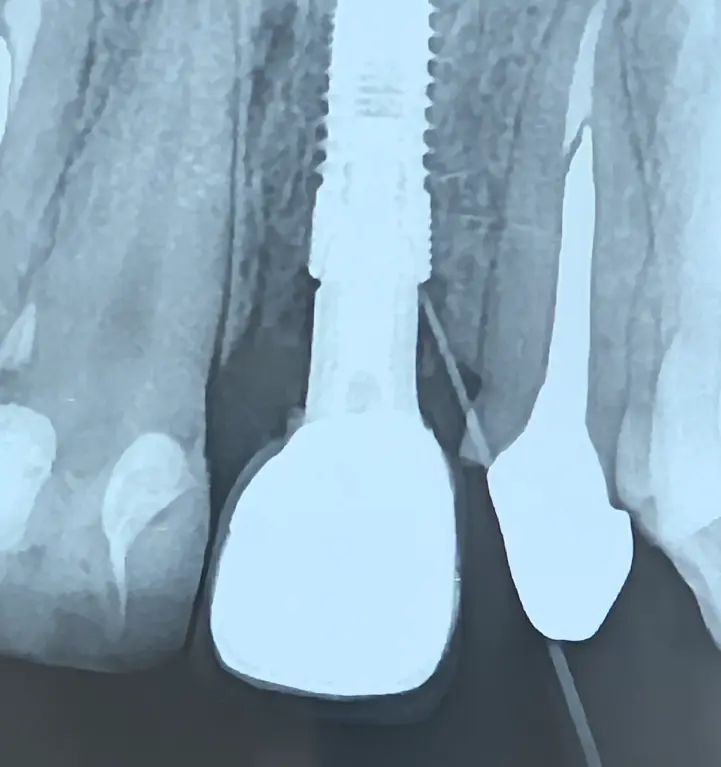
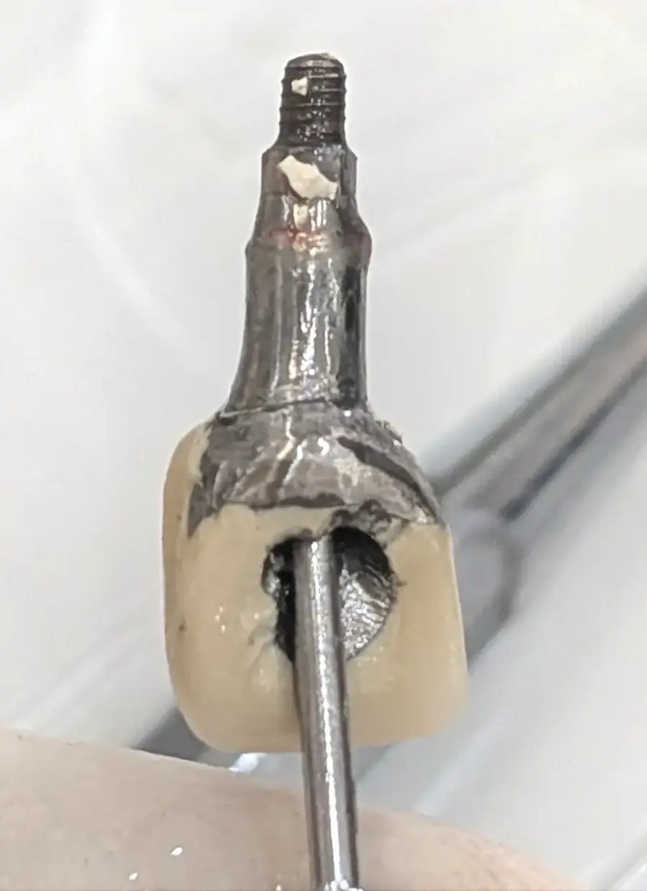

نسخه استخراجشده؛ ترجمه یا تأیید علمی انجام نشده است. وضعیت: captured
بیمار جوانی با یک ایمپلنت در دندان یکِ سمت چپ آمده و قرار است درمان زیبایی ناحیهی قدامی انجام شود. روکش ایمپلنت از نظر زیبایی مشکل دارد و تصمیم به تعویضش گرفته شده، اما آبسه در ناحیهی ایمپلنت مسیر درمان را پیچیده کرده است.

با تریس مسیر آبسه مشخص شد منشأ آبسه کانکشن ایمپلنت است؛ نه استخوان و نه فیکسچر. بنابراین نیازی به خارجسازی ایمپلنت نبود.
سؤال بعدی این است: چرا کانکشن منشأ آبسه است؟
در جلسهی قالبگیری تصمیم گرفته شد ابتدا روکش و اباتمنت تعویض شوند و سپس روند ترمیم بررسی شود. برای دسترسی به پیچ ایمپلنت، از پشت روکش ورودی ایجاد شد و روکش خارج شد.

پس از خارجکردن روکش مشخص شد سمان باقیمانده در داخل کانکشن عامل التهاب مزمن و آبسه بوده است.
با حذف منبع اولیهی التهاب، آبسه بدون نیاز به جراحی برطرف خواهد شد. دو نکتهی کلیدی این کیس: آبسه را تریس کن، و خطر سمان باقیمانده را جدی بگیر.
سه روش اصلی اتصال روکش ایمپلنت وجود دارد: سمانشونده، پیچشونده و اسکروسمنت. سمانشوندهها از نظر زیبایی و سادگی برترند اما خطر باقیماندن سمان دارند؛ پیچشوندهها و اسکروسمنتها دسترسی کامل به پیچ میدهند، ولی بهدلیل حفرهی بزرگ، یکپارچگی و زیبایی روکش را تحت تأثیر قرار میدهند. Shahabian Concept برای ایجاد تعادل میان این روشها شکل گرفته و خروجی کلینیکیاش SVC است.
در SVC روکش سمانشونده ساخته میشود، اما یک سوراخ کوچک و کنترلشده دقیقاً روی محل حفرهی پیچ ایجاد میشود؛ نه به اندازهی عبور آچار و نه کاملاً بسته، بلکه در حد عبور یک سوند. این سوراخ چهار کار میکند:
SVC استحکام و یکپارچگی ساختاری روکش را حفظ میکند و زیبایی سطح اکلوزال یا لبیال را به خطر نمیاندازد. جایگزین مطلق روشهای موجود نیست؛ راهکاری عملگرایانه برای شرایط واقعی کلینیکی است، جایی که دقت، پیشبینیپذیری و امکان سرویسدهی بلندمدت اهمیت دارند.
نوع سؤال: ساخت کلمه · 6 خانه
حروف منبع: ا · ک · ش · ن · ن · ک